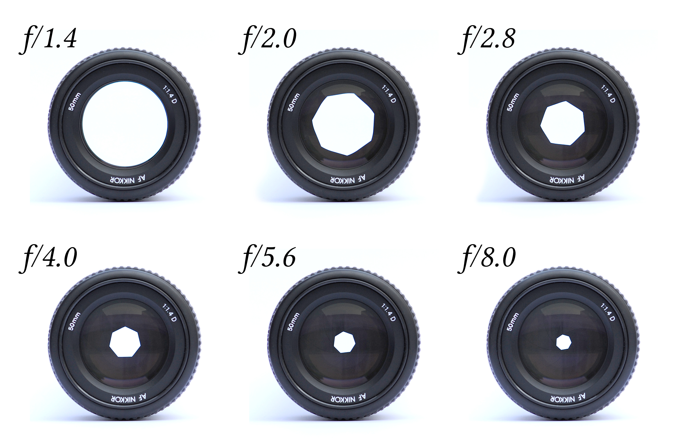
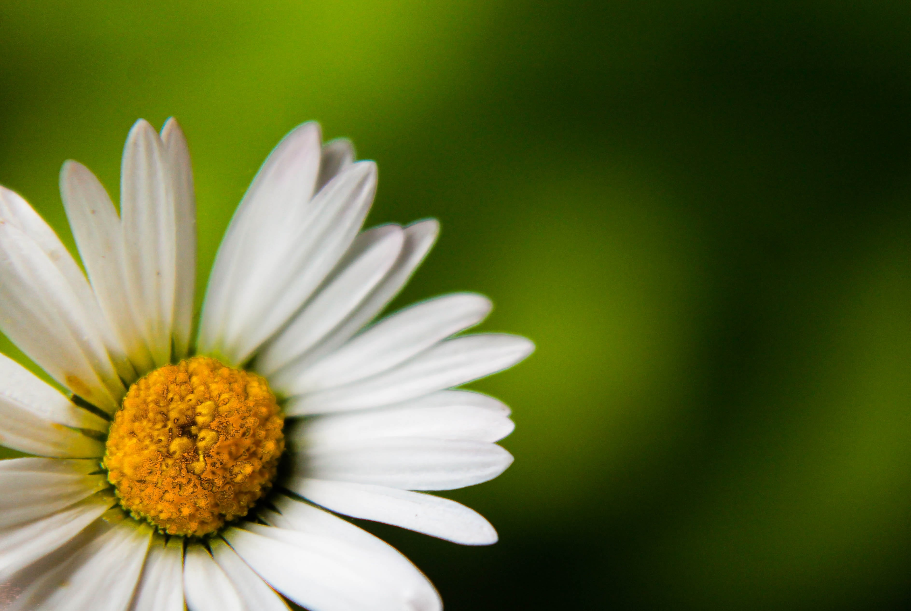
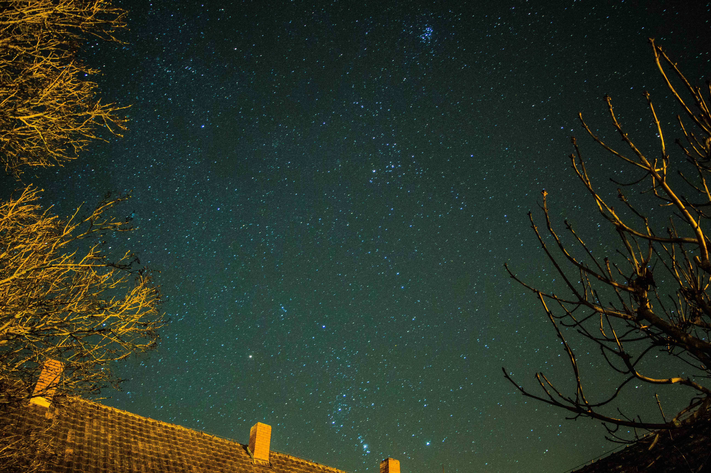

Kontakt
Kategorien
Start
Kontakt
Kategorien
Start
Du hast eine tolle neue Kamera, aber weißt gar nicht, was Du alles damit machen kannst und wie Du ihr volles Potential ausschöpfst?
Oder Du wolltes einfach schon lange mal richtig gut fotografieren lernen und tolle Bilder erstellen?
Dann bist du hier genau richtig. Ich werde dir alles notwendige beibringen, was du brauchst, damit alle staunen, wenn sie Deine Bilder sehen.
Also schnapp Dir Deine Kamera und los geht's!
Solange die Kamera auf Automatik gestellt ist und die ganze Arbeit macht, wirst du nicht viel dazu lernen.
Also nehme das Drehrad an Deiner Kamera und stelle es auf "m".
Hast du die Kamera nun in den manuellen Mous gestellt?
Super!
Dann stehen dir jede Menge, mehr oder weniger nützliche, Funktionen zur Verfügung.
Die drei, meiner Ansicht nach wichtigsten sind die die Blende, Belichtungszeit und der ISO-Wert.
Mit der Blende wollen wir nun anfangen.

Die Blende befindet sich im Objektiv deiner Kamera und kann komplett geöffnet sein oder sich in verschiedenen Abstufungen (wie oben abgebildet) verkleinern.
Je größer dabei, der f-Wert ist, desto kleiner ist die Blende.
Ist die Blende weit geöfnnet, so wird nur ein sehr kleiner bereich von der Kamera scharf abgebildet, der Rest wird sehr schnell unscharf.
Wie auf folgendem Bild zu erkennen ist:

Alles was sich hinter der Blume befindet wird sehr unscharf dargestellt (das nennt man häufig auch Bokeh).
Dadurch wird das Gänseblümchen deutlich hervorgehoben.
Möchte man dies nicht, zum Beispiel beim Fotografieren von Landschaften, so muss die Blende weiter geschlossen werden, um möglichst viel scharf abzubilden.
Um ein Foto zu machen, muss die Kamera den Verschluss öffnen und dadurch Licht auf den Sensor fallen lassen.
Doch wie lange, soll dieser Verschluss geöffnet bleiben?
Ist er zu lange geöffnet, dann erreicht so viel Licht den Sensor, dass Du letztlich nur noch ein komplett weißes Bild erhätst.
Ist er zu kurz geöffnet, dann erreich nicht genug licht den Sensor und das Bild bleibt schwarz.
Daher merke dir, je mehr Licht du zur Verfügung hast, desto kürzer musst du dein Bild belichten.
An einem hellen Sommertag draußen, reichen einige tausendstel einer Sekunde häufig aus.
Aber willst du bei Nacht Fotografien, dann dürfen es auch gerne bis zu 30 Sekunden oder noch länger sein.
So erhältst du Bilder wie dieses:
